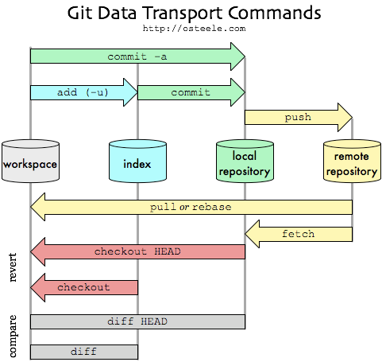

生成密钥
ssh-keygen -t rsa -C “username@email.com”
添加本地仓库到github
- git init
- git remote add origin git@github.com:bxxfighting/NowToDo.git
- git branch -u origin/master
- git pull
忽略已提交文件
- 先用如下命令:
git rm -r --cached filename - 再更新.gitignore文件忽略相关文件
创建git使用步骤
- 生成ssh key： git bash下运行 ssh-keygen -t rsa -C”username”,然后三个回车，密码为空，上传用户文件夹下的公钥 id_rsa.pub 到服务器
- 配置全局用户名 git config –global user.name “hai”、email git config –global user.email “username@email.com“
- 配置cr、crlf转换 git config –global core.autocrlf input
- 配置safecrlf转换 git config –global core.safecrlf true
- 下载代码 git clone git@l.zjchey.com:code/NjqWeb.git
- 创建并切换分支 git checkout -b dev
- 建立当前本地分支dev和远程dev分支track git branch -u origin/dev
- 获取代码 git pull（相当向下箭头），提交代码 git add. git commit -m “message” git push（相当在vcs右键 commit changes）
git分支
- 创建分支 git branch < branch_name >,切换分支 git checkout < branch_name >,创建并切换分支 git checkout -b < branch_name >
- 显示本地分支 git branch,显示远程分支 git branch -r,显示本地和远程分支 git branch -a
- 获取远程分支 git pull origin < branch_name > 或者 git pull
- 推送到远程分支，git push origin < local_branch_name >:< remote_branch_name >,若本地分支和远程分支tracked，可简写为 git push,若 < local_branch_name > 为空，则删除远程分支
- 获取远程新分支 git checkout -b < local-branchname > origin/ < remote_branchname>
- 删除本地分支 git branch -d < branch_name >,删除远程分支 git branch -d -r orign/< branch_name >
- 合并分支 git merge < branch_name >
- 建立当前本地分支dev和远程dev分支track git branch -u origin/dev，新建和远程dev分支tracked的本地分支 git branch –track dev origin/dev
- 查看本地分支和远程分支是否tracked git branch -vv
- 分支重命名 git branch -m oldbranch newbranch
git撤销
- 撤销add git checkout – filefullname
- 撤销commit git reset HEAD filefullname
- git reset –mixed：此为默认方式，不带任何参数的git reset，即时这种方式，它回退到某个版本，只保留源码，回退commit和index信息
- git reset –soft：回退到某个版本，只回退了commit的信息，不会恢复到index file一级。如果还要提交，直接commit即可
- git reset –hard：彻底回退到某个版本，本地的源码也会变为上一个版本的内容
git区图解

git其他命令
- 创建裸库： git init --bare NjqWeb.git
- 查看本地设置 git config –list
- work和index的比较 git diff，index和repository比较 git diff –staged，work和repository比较 git diff HEAD
- git status中文被转义 git config –global core.quotePATH false
- master分支仅发布不干活，dev分支仅干活不发布
git多远程仓库
1 | [core] |